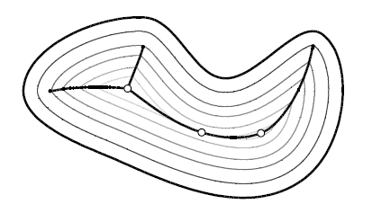

Medial Axis
Concepts Origin
Medial Axis:

First used by Blum for image analysis.
- H. Blum. A transformation for extracting new descriptors
of shape. In W. Wathen-Dunn, editor, Models for the
Perception of Speech and Visual Form, pages 362--380,
Cambridge, MA, 1967. M.I.T. Press.
Applications
- Image analysis for shape recognition
- motion planning in robotics
Topics
Stability
Computation